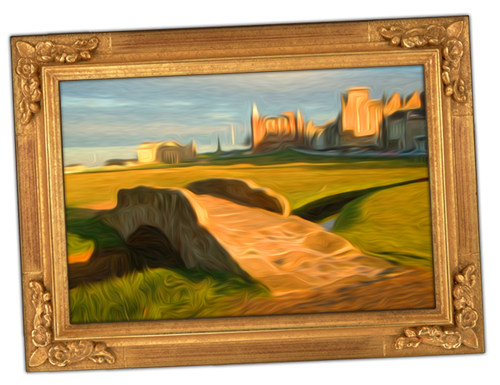

The eight holes on this part of the course are each named after a technology, in reverse alphabetical order.

The game of golf was invented on the Old Course at St Andrews.
The eight holes on this part of the course are each named after a technology, in reverse alphabetical order.